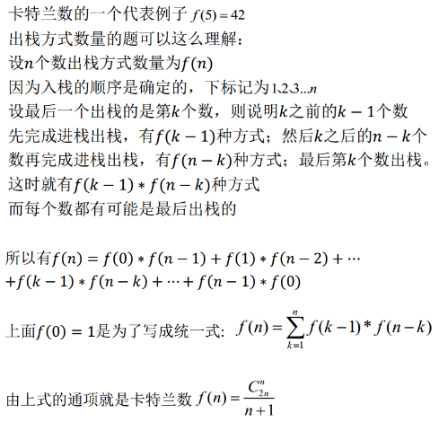

5.25-2.27
1.源码 ->（扫描）-> 标记 ->（语法分析）-> 语法树 ->（语义分析）-> 标识语义后的语法树 ->（源码优化）-> 中间代码 ->（代码生成）-> 目标机器代码 ->（目标代码优化）-> 最终目标代码
2.极大连通子图——无向图
极大强连通子图——有向图
3
.
4. 存储密度=单链表数据项所占空间/结点所占空间。 结点所占空间有数据域和指针域组成。故存储密度小于1
5. 所谓静态链表就是没有指针的，用下标模仿这个指针的功能的
6. 稀疏矩阵在采用压缩存储后将会失去随机存储的功能。因为在这种矩阵中，非零元素的分布是没有规律的，为了压缩存储，就将每一个非零元素的值和它所在的行、列号做为一个结点存放在一起，这样的结点组成的线性表中叫三元组表，它已不是简单的向量，所以无法用下标直接存取矩阵中的元素。
7.存储结构是数据的逻辑结构用计算机语言的实现，常见的存储结构有： 顺序存储 ， 链式存储 ， 索引存储 ，以及 散列存储 。其中散列所形成的存储结构叫 散列表（又叫哈希表） ，因此哈希表也是一种存储结构。栈只是一种抽象数据类型，是一种逻辑结构，栈逻辑结构对应的顺序存储结构为顺序栈，对应的链式存储结构为链栈，循环队列是顺序存储结构，链表是线性表的链式存储结构
8. 数组不一定是同类型值的集合，数组可以由重复数据，集合不行
9.在二叉树中，设度为0，为1，为2的节点分别有N0，N1，N2.则有以下等式
N0+N1+N2=1*N1+2*N2+1
解方程，得 N0=N2+1,
10.回路：第一个顶点和最后一个顶点相同的路径称为回路（环）。
简单路径：在一条路径中，若没有重复相同的顶点，该路径称为简单路径。
简单回路：在一个回路中，除了第一个与最后一个顶点外，其余顶点不重复出现的回路称为简单回路（简单环）。
11.BFPRT算法解决的问题十分经典，即从某n个元素的序列中选出第k大（第k小）的元素，通过巧妙的分 析，BFPRT可以保证在最坏情况下仍为线性时间复杂度。该算法的思想与快速排序思想相似，当然，为使得算法在最坏情况下，依然能达到o(n)的时间复杂 度，五位算法作者做了精妙的处理。
算法步骤：
1. 将n个元素每5个一组，分成n/5(上界)组。
2. 取出每一组的中位数，任意排序方法，比如插入排序。
3. 递归的调用selection算法查找上一步中所有中位数的中位数，设为x，偶数个中位数的情况下设定为选取中间小的一个。
4. 用x来分割数组，设小于等于x的个数为k，大于x的个数即为n-k。
5. 若i==k，返回x；若i<k，在小于x的元素中递归查找第i小的元素；若i>k，在大于x的元素中递归查找第i-k小的元素。
终止条件：n=1时，返回的即是i小元素。
12

选快希堆不稳（是不稳定的排序）， 堆归选基均不变（运行时间不发生变化，与初始状态无关）
13
算法的基本控制结构： 顺序、选择、循环
递归不属于基本控制结构
14. 其中%o和%x都是二进制的延伸，即八进制和十六进制，可以适用于unsigned变量输出
15 算法的5个基本特征：确定性、有穷性、输入、输出、可行性。
16. ++语言规定在使用scanf输入时可以用作数据分隔符的有空格，回车和Tab键
17. 1.不建议在构造函数中抛出异常；
2.构造函数抛出异常时，析构函数将不会被执行,需要手动的去释放内存
1.析构函数不应该抛出异常；
2.当析构函数中会有一些可能发生异常时，那么就必须要把这种可能发生的异常完全封装在析构函数内部，决不能让它抛出函数之外；
3. 析构函数异常相对要复杂一些，存在一种冲突状态，程序将直接崩溃：异常的被称为“栈展开(stack unwinding)”【备注】的过程中时，从析构函数抛出异常，C++运行时系统会处于无法决断的境遇，因此C++语言担保，当处于这一点时，会调用 terminate()来杀死进程。因此，当处理另一个异常的过程中时，不要从析构函数抛出异常, 抛出异常时，其子对象将被逆序析构
18.数据元素：字段、域、属性
数据项：元素、结点、顶点、记录
数据项组成数据元素，数据元素组成数据